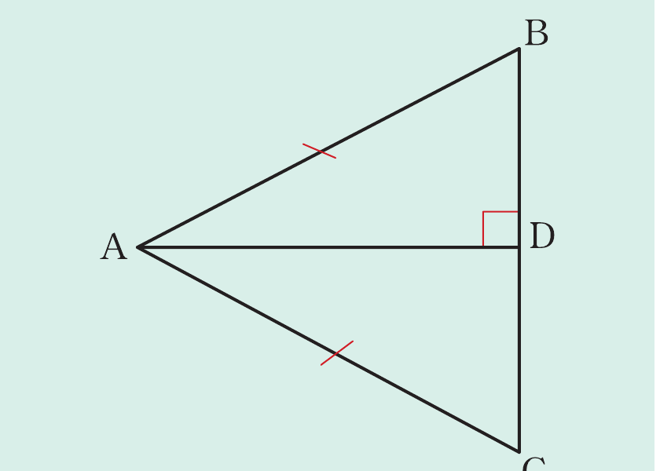

Example 2.10
Use the following figure to prove that △ADB ≅ △ADC and DB = DC.

Solution
Given △ABC such that AD is perpendicular to BC.
Required to prove that
(a) △ADB ≅ △ADC
(b) DB = BC

Given △ABC such that AD is perpendicular to BC.
Required to prove that
(a) △ADB ≅ △ADC
(b) DB = BC